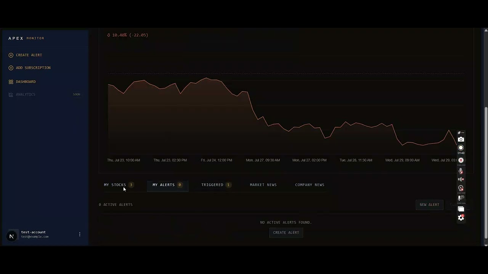
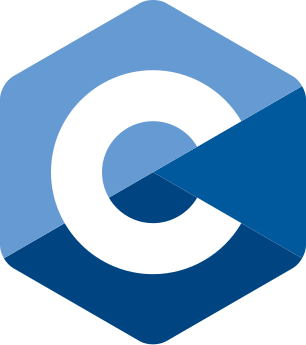
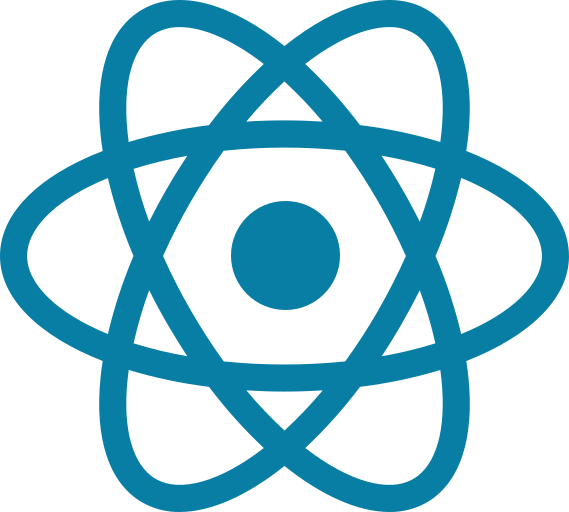
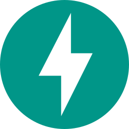
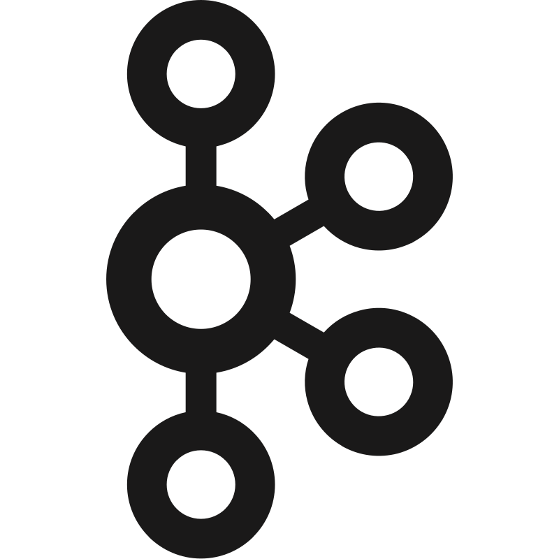
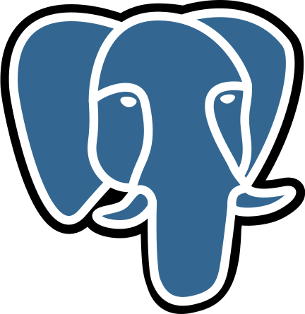
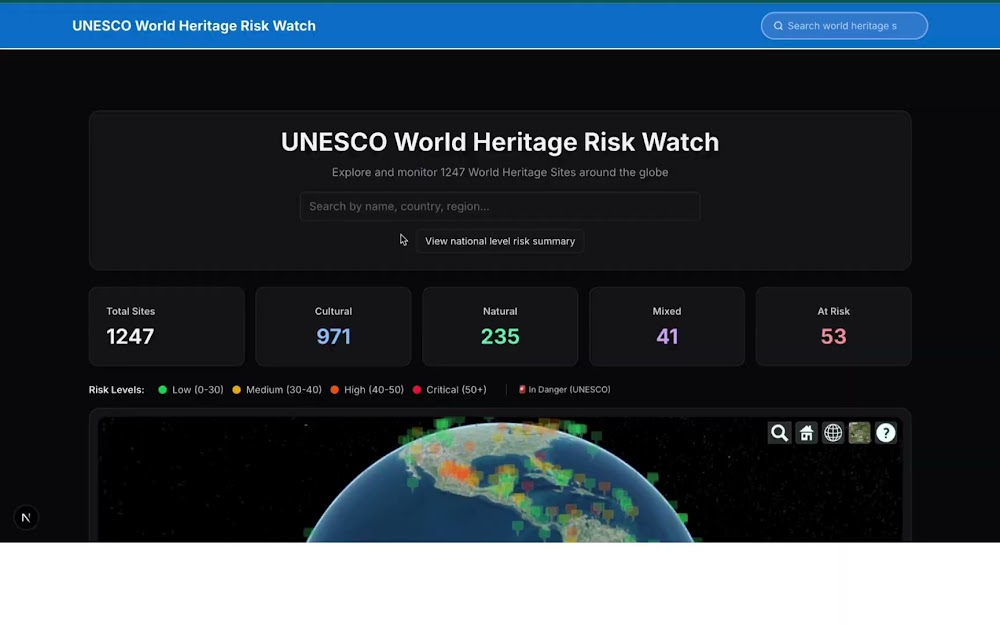
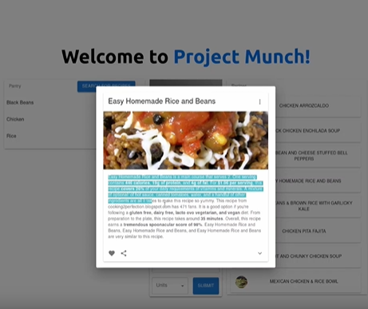
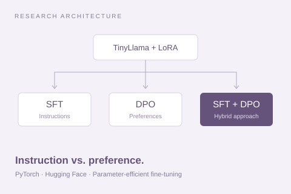

Apex Monitor
A real-time market monitoring platform with streaming stock prices, interactive historical charts, and customizable price alerts.

Software Engineer. I build full-stack applications and backend systems with a focus on reliability and real-time data. See my projects
I'm a software engineer with a Bachelor of Science in Computer Science from Virginia Tech. I work across the stack, from event-driven Java backends to interactive React interfaces. My projects include streaming market data, risk analysis for 1,200+ World Heritage sites, and language model alignment. I enjoy turning complex data and systems into useful, reliable software.
Blacksburg, Virginia. Technical foundations in data structures and algorithms, object-oriented programming, database design, distributed systems, and concurrency.
A paid, 16-week professional program focused on scalable systems and technical career preparation.






A real-time market monitoring platform with streaming stock prices, interactive historical charts, and customizable price alerts.

An interactive 3D globe exploring climate, conflict, and environmental risks across 1,200+ UNESCO World Heritage sites.

A webcam receipt scanner that turns grocery purchases into a digital pantry, personalized recipes, and nutritional insights.

A group research project comparing SFT, DPO, and hybrid approaches to language model alignment using LoRA on TinyLlama.

Have a role, project, or interesting problem in mind?
Contact me at demiomoremi@gmail.com or compose a message below.